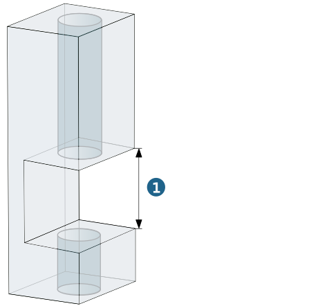
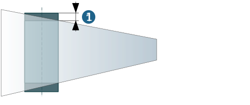
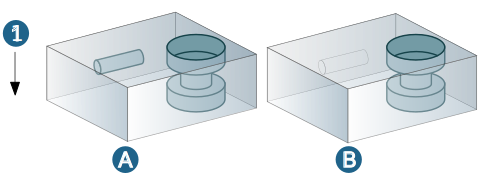
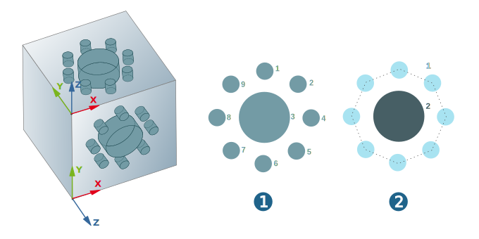

Feature Mapping (Hole)
To transfer hole information from a CAD model (solid):
-
In the hyperMILL browser, switch to the Feature tab.
-
Right-click the upper area of the feature browser and select the Feature Mapping (Hole) function from the shortcut menu.
The Feature Mapping (Hole) dialog comprises the areas General, Options and More.
General
Tolerance: Specifies the accuracy level for transferring the geometric data from the CAD model.
Options
Check slot: Enable this option if slot recognition is required.
Slot tolerance: (1) Enter a distance from which a feature is to be divided into two or more features if the holes are concentric and have the same diameter, but there is free space between them, for example, a slot is constructed. If the distance is smaller, the free space is bridged – only one feature is created.
|  |
Detect spot depth: Recognized features are checked for spots and any existing spots are displayed accordingly. The spot depth (1) is displayed in the list of feature parameters.
|  |
Check bottomRecognized features are also checked for bottom spots and any existing spots are displayed accordingly.
Gap tolerance: Recognized features are checked for gaps and marked accordingly (see figure). The spot depth (3) is displayed in the list of feature parameters.
(1) Gap tolerance < column, (2) Gap tolerance > column
.
Limiting diameter: Enable this option when holes require diameter limiting.
Max. diameter: Features are only created for holes with diameters that are equal to or smaller than the maximum diameter.
Use preferred machining direction: All holes that can be machined from the defined direction are combined into a single feature list.
Offset angle (degree): Angle range within which the preferred machining direction is checked. Default = 0.5°.
Example:
(1) Preferred machining direction is not activated:
The machining direction (A) of all holes is unchanged.
(2) Preferred machining direction is activated, Offset angle (degree): default (0.5):
The machining direction (A) of a hole is reversed.
(3) Preferred machining direction is activated, Offset angle (degree): 45°:
The machining direction (A) of all holes is reversed.
 |
Note
This characteristic is evaluated with application of the feature in an intelligent macro.
Check sink: A check is carried out to see if sinks can be machined from the defined direction. In the example, the preferred machining direction is defined using the frame.
Example:
(1) Check sink is activated.
(2) Check sink is not activated.
All the features are combined into a feature list and are shown in turquoise.
Machining direction (3): Define the machining direction.
|
Click the icon and select a geometric element (line, normal of a surface, frame ...) or enter vectors manually. |

Feedback position (4): Define the origin of the graphical feedback for the preferred machining direction.
|
Click the icon and select a geometric element (snap point, point ...) or enter coordinate values manually (with reference to the origin of the graphical feedback). |

More
Offset to bottom: Features based on through holes are created with the bottom offset specified here.
Use feature list: If this option is enabled, the holes are saved as features in existing feature lists. Feature assignment is in reference to the frames assigned to feature lists. Feature lists that do not contain frames are ignored.
Frame creation mode
2D: A feature list is created for each drilling direction and a frame is assigned to each feature list.
5X: All recognized features are combined into one feature list, but a frame is not assigned to this list.
Mixed: If several holes have the same orientation, a feature list is created for this orientation and a frame is assigned to the feature list. All other holes are combined into one feature list, but a frame is not assigned to this list.
Split by diameter: In the case of multi-step holes, the diameter of the individual steps is taken into account when arranging the features in the feature list (B). The machining direction (4) is included.
If, from the direction of machining, the diameter of a subsequent step is greater than the diameter of the preceding step, the hole is divided into two or more Simple (3) and Sink Holes (2).
If the split by diameter function is disabled (A), this multi-step hole is included in the feature list as a freely defined hole (1).
 |
Check machinability: If this function is enabled (B), only holes that are in accessible areas are recognized as a feature and displayed. In figure (A), the function is disabled; (1) shows the machining direction.
|  |
Use color table
When importing feature information from a CAD model, hyperMILL also recognizes feature properties such as thread, ISO fits or feature classes if these are defined in a color table.
hyperMILL evaluates the assignment of color information to feature properties when generating features and incorporates the corresponding parameter directly in the feature. At the same time, this parameter is also included in the feature name and is thus available for selection when creating and using macros.
To read information from a color table, activate the option Use color table in the Feature Mapping (Hole) dialog and use the Edit color table function (via the menu → → → → ) to specify colors for threads, ISO-fits and pockets using sample elements.
The information is stored in a *.xml file, which is located in the following folder by default.
C:\Users\Public\Documents\OPEN MIND\ColorTable\default[version].xml
In order for hyperMILL to be able to correctly recognise the Thread and Fits feature properties, they must be defined as follows:
Example:
<Color_Table> <Color_Machining_Definition R="128" G="64" B="64" FitDesignation="H7" ThreadDesignation="Mx" FeatureClass="Special FC" UseThreadNominalDiameter="1"/> <Color_Machining_Definition R="128" G="0" B="128" FitDesignation="H12"ThreadDesignation="M;G" UseThreadNominalDiameter="0" /> </Color_Table>
The R (Red), G (Green) and B (Blue) identifiers can be assigned color values between 0 and 255.
The FitDesignation element can assume fit designations (example H7) and the ThreadDesignation element can assume the values M = Metric Coarse Pitch, Mx = Metric Fine Pitch, W = Whitworth and G = Gas Uni.
Several thread types are separated by ; with the order of the list determining the order of the search.
The FeatureClass element can accept designations of defined feature classes.
UseThreadNominalDiameter can assume the values 0 and 1. 0 = Reference value is the core diameter of the thread, 1 = Reference value is the nominal diameter of the thread.
Use color table only: Only the holes whose color matches the colors in the color table are adopted. Holes with colors, which are not defined in the color table, are not recognized.
Use Generic Hole only: During the assignment of feature information from the CAD model, Simple Holes, Sink Holes and Free defined Holes are transferred directly to the feature browser as Generic Holes.
Keep CAD features: Activate if a CAD hole feature should remain associatively linked to the hyperMILL feature after feature mapping. This also applies to features that were read in via a direct interface.
Min. tip angle: Define from which angle holes can be recognized as a tip or through hole type. If the defined tip angle is larger than the angle in the hole, these holes are recognized as the through hole type. If the tip angle is smaller, the holes are recognized as the tip hole type.
Example:
(1) Min. tip angle = 75°. Holes 50°/ 60° = Through, hole 90° = Tip.
(2) Min. tip angle = 55°. Holes 50° = Through, holes 60°/90 = Tip.
(3) Min. tip angle = 45°. Holes 50°/ 60° / 90° = Tip
 |
Create associative point: Display and edit point coordinates of hole features relative to a selected frame.
Grouping features: Features with the same geometry are combined into a feature for each frame. (1) Function is not enabled, (2) Function is enabled.
|  |
Result of Feature Mapping:
-
All holes that comply with the mapping conditions defined and are drilled in the same direction are compiled into a feature in the feature list.
-
A new frame is created for a feature list if there are at least two holes with the same drilling direction. All of the other features are combined in another feature list without a frame.
-
A hyperMILL feature appears as a new entry in the feature list and can be used in the job definition.
Min. segment angle: Cylindrical surfaces with a segment angle greater than 270° are recognized as holes.